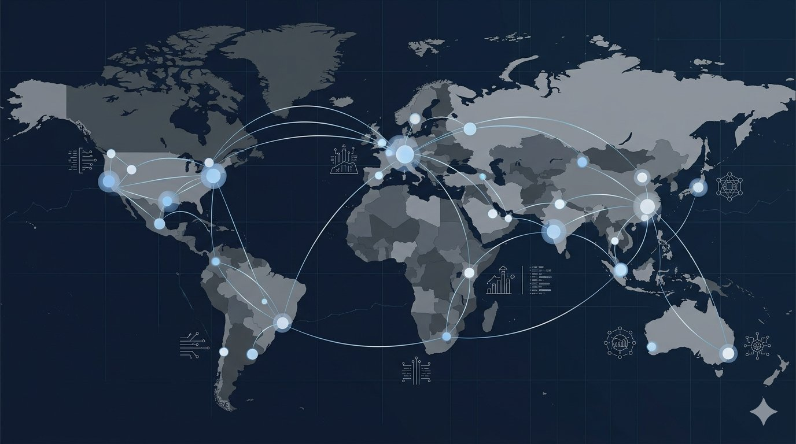
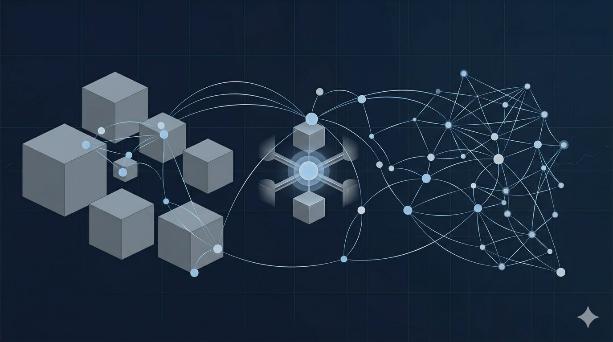
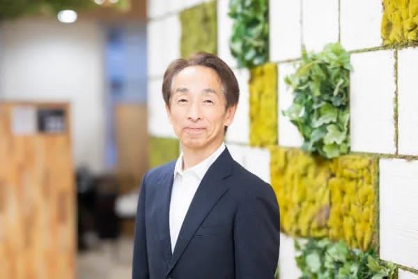

Connecting Global Platforms with Emerging Technology Ecosystems
Skyfellow is an independent business development initiative connecting global platforms with emerging technology ecosystems. Led by Hidemichi Suzuki and Akira Miwa, the initiative supports early-stage market mapping, partner discovery, and the structuring of potential collaboration themes across technology, mobility, supply chain, and industrial domains.
Skyfellow supports global companies and industrial platforms that are exploring new business development opportunities through external technology collaboration.
The initiative focuses on identifying relevant emerging technologies, startup candidates, VC-connected opportunities, and IPO-near companies that may contribute to future collaboration discussions.
It is not designed as an acquisition mandate or investment solicitation. At the initial stage, Skyfellow focuses on market mapping, hypothesis development, informal temperature checks, and the preparation of practical discussion themes before formal commercial engagement.

Skyfellow Initiativeは、外部テクノロジーとの連携を通じて、新たな事業開発機会を探索するグローバル企業・産業プラットフォームを支援するための取り組みです。
主な役割は、新興テクノロジー企業、スタートアップ、VCネットワーク、IPO準備・IPO近接企業などを整理し、将来的な協業可能性を検討するための初期仮説を構築することです。
本イニシアチブは、買収・出資案件の斡旋を目的とするものではありません。初期段階では、市場整理、候補企業の抽出、非公式な温度感確認、正式協議前のテーマ設計を中心に行います。
Identifying relevant technology companies, startups, and innovation themes across selected industrial domains.
Exploring collaboration themes across mobility, automotive, logistics, infrastructure, and industrial technology fields.
Mapping solutions related to procurement visibility, supplier risk, business continuity, and supply chain resilience.
Leveraging professional networks to understand promising companies before or around major growth stages.
Structuring clear narratives and discussion materials for global and regional stakeholders.
Supporting practical coordination between global platforms and local technology ecosystems.
特定の産業領域における有望なテクノロジー企業、スタートアップ、技術テーマを整理します。
モビリティ、自動車、物流、インフラ、産業技術領域における協業テーマを検討します。
調達可視化、サプライヤーリスク、事業継続、サプライチェーン強靭化に関するソリューションを整理します。
VCネットワークやIPO準備企業周辺の情報を活用し、成長企業の把握を支援します。
グローバル企業・地域側関係者向けに、分かりやすい提案ストーリーと協議資料を設計します。
グローバルプラットフォームと各地域のテクノロジー・エコシステムをつなぐ実務的な調整を支援します。

Clarify the business themes, technology domains, and stakeholder needs.
Identify startups, growth companies, IPO-near companies, and ecosystem players that may fit the initial themes.
Where appropriate, conduct informal discussions to understand interest level, timing, and practical feasibility.
Organize possible discussion themes before any formal introduction or commercial negotiation.
Create concise materials that help global and local stakeholders understand the opportunity clearly.
事業テーマ、技術領域、関係者のニーズを明確化します。
スタートアップ、成長企業、IPO近接企業、関連エコシステムの中から初期テーマに合う候補を整理します。
必要に応じて、先方の関心度、タイミング、実務上の可能性を非公式に確認します。
正式な紹介や商談に入る前に、協議すべきテーマや論点を整理します。
グローバル企業側・地域側の双方が機会を理解しやすいよう、簡潔な資料を作成します。
The founding members bring professional experience across technology, investor relations, disclosure services, listed-company communications, and cross-border business development.
Hidemichi Suzuki brings executive-level experience in cross-border business development, investor relations, strategic communication, and international stakeholder coordination.
He currently serves as Director with Representative Authority and Chief Communication Officer at IQ121.COM Limited, a UK-based secure smartphone application company. He also serves as Director with Representative Authority at Amazon Natural Spring Waters Limited.
His background spans technology, natural resources, consumer products, overseas sales, investor relations, and business development, with prior experience at Minsetsu, A-STORY, and Aicello. He studied Finance and Aerospace Engineering at Arizona State University.
Within Skyfellow Initiative, Suzuki focuses on strategic positioning, global communication, investor and VC network coordination, and the structuring of early collaboration themes between global platforms and emerging technology companies.

Akira Miwa brings extensive experience in Japan's listed-company, investor relations, disclosure services, and IPO-adjacent ecosystem.
He is currently involved in Japan-side business development for IQ121.COM Limited and also serves as an Advisor to Figurout, Inc.
Miwa previously spent more than 25 years at TAKARA PRINTING CO., LTD., where he developed deep practical knowledge and corporate relationships across listed companies, IPO-preparation companies, disclosure services, and investor relations communities. He also held sales specialist roles at Minsetsu, Inc. and Figurout, supporting services that connect listed-company IR teams with institutional investors and related stakeholders.
Within Skyfellow Initiative, Miwa focuses on Japan-side corporate access, IPO-near company discovery, IR ecosystem intelligence, and practical coordination with high-potential technology companies.
創設メンバーは、テクノロジー、投資家対応、ディスクロージャー支援、上場企業コミュニケーション、クロスボーダー事業開発における実務経験を有しています。
鈴木英道は、クロスボーダー事業開発、投資家対応、戦略的コミュニケーション、海外ステークホルダーとの調整において、経営レベルの実務経験を有しています。
現在は、英国を拠点とするセキュアなスマートフォンアプリ企業であるIQ121.COM Limitedにて代表権を有する取締役およびChief Communication Officerを務めています。また、Amazon Natural Spring Waters Limitedにおいても代表権を有する取締役を務めています。
これまで、テクノロジー、天然資源、消費財、海外営業、投資家対応、事業開発など幅広い領域に携わり、Minsetsu、A-STORY、Aicelloでの経験も有しています。Arizona State UniversityではFinanceおよびAerospace Engineeringを学びました。
Skyfellow Initiativeでは、戦略的ポジショニング、グローバルコミュニケーション、投資家・VCネットワークとの調整、グローバルプラットフォームと新興テクノロジー企業の初期協業テーマ設計を担います。
三輪明は、日本の上場企業、投資家対応、ディスクロージャー支援、IPO準備企業周辺のエコシステムにおいて豊富な経験を有しています。
現在はIQ121.COM Limitedの日本国内における事業開拓に関与しており、Figurout, Inc.の顧問も務めています。
宝印刷株式会社に25年以上在籍し、上場企業、IPO準備企業、ディスクロージャー支援、IR関連コミュニティにおいて深い実務知見と企業ネットワークを築いてきました。Minsetsu, Inc.およびFiguroutでは営業スペシャリストとして、上場企業IR担当者と機関投資家・関係者をつなぐサービスに携わりました。
Skyfellow Initiativeでは、日本側の企業接点、IPO近接企業の探索、IRエコシステムに関する知見、成長可能性の高いテクノロジー企業との実務的な調整を担います。
Suzuki provides cross-border business development, investor relations, and strategic communication capability, supported by current director-level responsibilities in international companies. Miwa provides deep Japan-side corporate, IR, IPO-near company, and listed-company network access, supported by long-term experience in disclosure services and investor relations-related businesses.
Together, they create a practical interface between global platforms and emerging technology ecosystems. The team is particularly suited for early-stage market mapping, informal discussions, candidate discovery, and relationship-driven coordination before formal commercial discussions begin.
Structuring narratives and materials that resonate with global enterprise stakeholders across different cultural and business contexts.
Deep relationships across Japan's listed-company ecosystem, IPO-near companies, and the disclosure services and IR communities.
Informal, trust-based access to early-stage opportunities before they enter formal market processes or public awareness.
Bridging the gap between global platform requirements and local technology ecosystem capabilities through practical engagement.
鈴木は、国際企業における現任の取締役としての責任を背景に、クロスボーダー事業開発、投資家対応、戦略的コミュニケーションに強みを有しています。三輪は、ディスクロージャー支援およびIR関連事業における長年の経験を背景に、日本側の企業ネットワーク、IR領域、IPO近接企業、上場企業コミュニケーションに関する深い実務経験を有しています。
両名の組み合わせにより、グローバルプラットフォームと新興テクノロジー・エコシステムをつなぐ実務的なインターフェースを構築することができます。特に、正式な商業協議に入る前の市場整理、非公式な温度感確認、候補企業探索、関係性を重視した初期調整に適しています。
異なる文化・ビジネス背景を持つグローバル企業のステークホルダーに響くストーリーと資料を設計します。
上場企業エコシステム、IPO近接企業、ディスクロージャー支援・IRコミュニティにおける深い関係性を有しています。
正式な市場プロセスや公開情報に入る前の、信頼ベースの非公式な初期機会へのアクセスを持ちます。
グローバルプラットフォームのニーズと、地域のテクノロジー・エコシステムの力を実務的に橋渡しします。
Skyfellow Initiative is designed to remain sector-flexible. Its initial strategic context includes selected opportunities across Japan-linked technology ecosystems and industrial domains.
Skyfellow Initiativeは、特定の業界や国に限定されない柔軟なイニシアチブとして設計されています。初期段階では、日本に関連するテクノロジー・エコシステムや産業領域を中心に、複数の可能性を検討します。
Professional backgrounds include technology, investor relations, disclosure services, listed-company communications, global business development, corporate networks, and startup ecosystem access.
Company names are listed as current or previous professional background references only. These companies are not partners, sponsors, shareholders, endorsers, or official supporters of Skyfellow Initiative.
創設メンバーの主な経歴領域には、テクノロジー、投資家対応、ディスクロージャー支援、上場企業コミュニケーション、グローバル事業開発、企業ネットワーク、スタートアップ・エコシステムとの接点が含まれます。
会社名はあくまでも現在または過去の職務経歴として表示しています。これらの会社はSkyfellow Initiativeの提携先、支援企業、出資者、スポンサー、正式関係会社ではありません。
For exploratory discussions, professional introductions, or initial collaboration themes, please use the contact form below.
This page is an independent introductory profile for the Skyfellow Initiative. It does not represent an official partnership, mandate, agency relationship, endorsement, approval, or affiliation by any company or organization referenced on this page. All collaboration themes and candidate areas are preliminary and subject to further discussion, validation, and appropriate approvals.
本ページは、Skyfellow Initiativeの独立した紹介ページです。本ページは、記載されるいかなる企業・団体による公式な提携、委任、代理関係、承認、推奨、または関係会社性を示すものではありません。記載される協業テーマおよび候補領域はすべて初期的な検討事項であり、今後の協議、検証、適切な承認を前提とします。